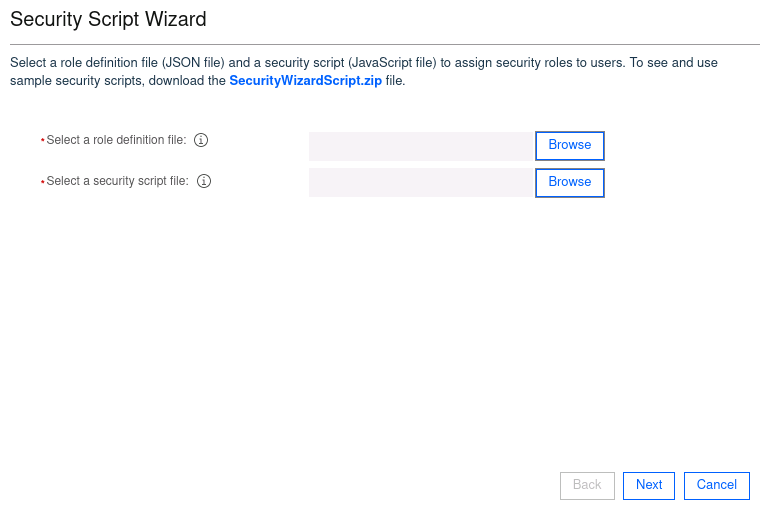
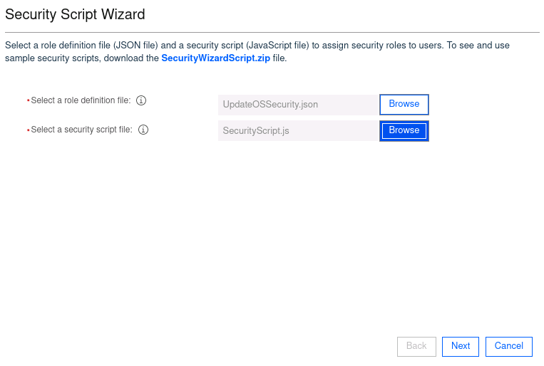
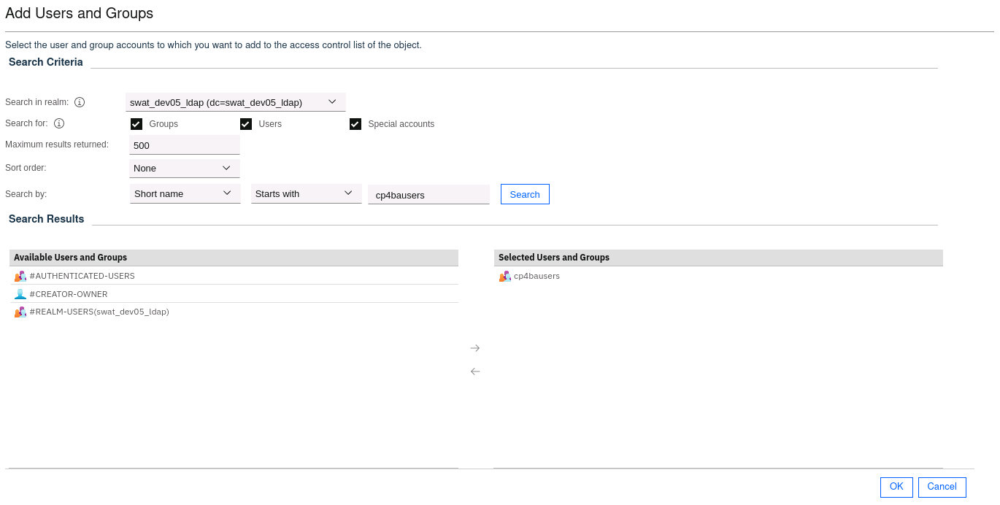
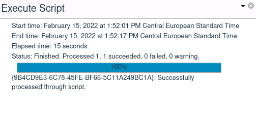
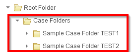

Rebuild (Individual)¶
Note
These labs assume that you have installed IBM Cloud Pak for Business Automation v21.0.3 on a ROKS cluster as described here and imported the Client Onboarding1 scenario as described here.
The labs below can be used to learn how various capabilities were configured in the Client Onboarding solution. As you already have expertise in one or more capability, you are encouraged to select a lab for a capability that you have the LEAST experience with and/or is the most needed skill in your market. Further, every member of the team should select a different rebuild lab for their first. Once the first Rebuild lab is completed, you may select additional rebuild labs or proceed to Customization.
As you perform the lab, think and coordinate with your team members how you might be able to customize the capability to fit client PoC requirements.
This lab is considered an individual activity as each team member should work on a separate rebuild lab. However, all work should be done on the shared team cluster and collaboration is highly recommended as you build components into your customized Client Onboarding PoC demonstration (Day 4).
Warning
Please note that you may need to redeploy your application depending on the rebuild lab update.
Warning
Content including the labs are based on the IBM SWAT Client Onboarding1 materials which are configured for the Production pattern. Our environment uses the Starter pattern and based on that, you may encounter some differences at certain steps.
Below are some differences you should be aware of, please post to the slack channel if you encounter additional differences.
- BAWTOS => TARGET
- cp4bausers => cp4admin
Overview¶
Expand to view
The table below lists all capabilities that we currently have labs for. A capability may contain one or more labs depending on the complexity.
| Capability | Approximate Duration |
|---|---|
| IBM Business Automation Application | 2-3 hours |
| IBM Business Automation Insights | 1 hour |
| IBM FileNet Content Manager | 2-4 hours |
| IBM Automation Decision Services | 3 hours |
| IBM Robotic Process Automation | 3-4 hours |
| IBM Business Automation Workflow | 5-6 hours |
Select the links below to view:
- Labs
- Solution Exports
1. IBM Business Automation Application¶
Expand to view
Overview¶
This is a low-code capability of IBM Cloud Pak for Business Automation that let's business users leverage services built by developers in other parts of the platform such as Workflow, Decisions & Content.
Labs¶
- Introduction to IBM Business Automation Application
(View)
This lab introduces you to the key concepts of IBM Business Automation Application including Application Designer. In this you will learn how to create toolkits, templates and applications that integrate with the Workflow, Decisions & Content capabilities of the CP4BA platform.
Approximate Duration: 2 Hours
2. IBM Business Automation Insights¶
Expand to view
Overview¶
IBM Business Automation Insights (BAI) is a cloud capability to capture end to end business data (events) from Cloud Pak for Automation (CP4A) platform components to operational data store and long-term store (data lake). BAI provides real-time operational visibility to Business Managers via custom or pre-built set of dashboards. Custom dashboards can be built by IT (using Kibana) or business users (using Business Performance Center). The data collected by BAI and stored in the data lake can be used to inject AI into CP4A platform, for example it can be used to make recommendations to business managers and knowledge workers. Business Performance Center is a no-code monitoring application native to IBM Business Automation Insights. You can design and share dashboards in minutes that capture business data in near real time and provide real time awareness of important business activities and processes.
Labs¶
Track 2 - Developer Role / Solution Implementation
- Build Business Performance Center Dashboards
(View)
In the lab, you will learn how to build and use Business Performance Center dashboards to provide insights into a Client Onboarding workflow solution for line of business users.
Approximate Duration: 1 Hour
3. IBM FileNet Content Manager¶
Expand to view
Overview¶
IBM FileNet Content Manager is a flexible, full-featured content management solution that provides the foundation for IBM Cloud Pak® for Business Automation. In labs you will get introduced to important core concepts of FileNet Content Platform Engine and Content Services GraphQL which will enable you to use FileNet Content Platform Engine to build the information architecture for automation projects realized with Cloud Pak for Business Automation.
Warning
ℹ️ [SKO UPDATE] We will NOT use the CLOS object store and instead use the existing CONTENT object store.
Expand to view
-
Log into the FileNet Administrative Console for Content Engine (ACCE) as cp4admin and select the object store named CONTENT.
Note: the entry in the access-info file will be named: Content Platform Engine administration -
Right-click on the object store name and invoke the Security Script Wizard. In the dialog which opens click the link "SecurityScriptWizard.zip", download the ZIP file, and unpack it.
 -
Provide provide the names of the unpacked file on the two entry boxes as shown below, then click "Next"
 -
On the next page, select "Object Store Administrators", then click "Add User/Group permission".

-
Confirm that the cp4admin is in this group. If not, add cp4admin user to the right side for adding it. Then click OK. 
-
Press Next to let the Wizard run, and dismiss the warning message. Close the "Execute Script" window after it completed. 
-
Navigate to Administrative -> Storage -> Storage Policies. Select "Select the storage area from a list" and specify content_operations
-
Navigate to Data Design -> Property Templates. Create two property templates with following:
Name Symbolic Name Type Case Reference ID Case_Reference_ID String Client Name Client_Name String -
Navigate to Data Design -> Classes. Create a new subclass of the "Folder" class with the name "SWAT Jam Case Folder" (Symbolic ID SWAT_JAM_Case_Folder).
-
Open the Folder class and add the two new property templates from above. Save the modified folder subclass.
-
Create the indicated folder structure under the Root folder. The Case Folders folder is a regular folder using the Folder object class.
The Sample Test Folder TEST1 should be created using the SWAT Jam Case Folder class and have the Case Reference ID and Client Name properties set to TEST1.
The Sample Test Folder TEST2 should be created using the SWAT Jam Case Folder class and have the Case Reference ID and Client Name properties set to TEST2.  -
Open Content Navigator, select the existing content desktop and update the Layout tab and enable the Simple Search feature (if it is not already enabled).
ℹ️ [SKO UPDATE] Use the symbolic names for Case Reference ID (Case_Reference_ID) and Client Name (Client_Name) properties. Replace these with where you see usrxxxReferenceID and usrxxxClientName in the lab document.
Labs¶
-
Setting up FileNet Content Manager for Automation Projects on Cloud Pak for Business Automation (View)
In this lab, you will create a small hierarchy of Document classes to capture different kinds of documents together with custom metadata, and will learn about the most important security concepts. You will explore Document storage and learn to migrate documents between different Storage Areas. Further you will determine how to trigger custom actions for example when new documents have arrived, and how to configure and test functionality of content based retrieval, i.e. searches for documents based on information contained in the documents themselves, not (only) on their metadata.
On this lab, for triggering the custom actions, a custom javascript is used to file a newly uploaded document into a folder, those identity is derived from a search. The script is available in the Lab Data folder.
Approximate Duration: 4 - 5 hours
-
Interfacing FileNet Content Platform Engine with GraphQL on Cloud Pak for Business Automation (View)
The second lab on GraphQL builds on top of the first one, as the searches performed using GraphQL use the documents and document classes defined in the first lab. Here you learn by a series of example, how to build the most important queries using GraphQL. The examples also show how to download documents using GraphQL, how to create folders, and modify security settings.
Approximate Duration: 1.5 - 2 hours
4. IBM Automation Decision Services¶
Expand to view
Overview¶
Part of the IBM Cloud Pak® for Business Automation platform, IBM Automation Decision Services provides a comprehensive environment for authoring, managing, and running decision services. Business experts can infuse intelligence into business decisions by combining decision models and predictive models into decision services. Business decisions can be published as Automation Services and easily consumed from other capability of the platform such as Workflow.
Labs¶
- Manage Decisions and infuse Machine Learning
(View)
This Lab introduces you to the key concepts of IBM Business Automation Decision Services. It includes three exercises that can be done separately. In this Lab you learn how to model business decisions, infuse intelligence by adding a predictive model, share and publish decision services.
Approximate Duration: 3 hours
5. IBM Robotic Process Automation¶
Expand to view
Overview¶
Going from simple, back-office task automation to scaled automation to handle time-consuming business processes can be a challenge. The IBM® Robotic Process Automation offering helps you automate more business and IT processes at scale with the ease and speed of traditional RPA. Software robots, or bots, can act on AI insights to complete tasks with no lag time and enable you to achieve digital transformation.
Labs¶
-
Application Automation using IBM RPA (View)
In this lab you will learn how to use IBM RPA Studio to develop a bot to automate a Java swing application and a web application. -
IBM RPA and Workflow Integration (View)
In this lab you will learn how the bot designed in RPA Studio can easily be integrated into a business process developed with the Workflow capability in IBM Cloud Pak for Business Automation. -
Chatbot Development and Configuration (View)
In this lab you will learn how to develop a chatbot script using IBM RPA Studio, and then shows how to configure the chat mapping through web client.
The labs requires an IBM RPA client environment which can be reserved here. Once you have reserved an environment, you will receive a link to the environment via email. Start the environment by selecting the start button in the upper right corner of the page. Please use your license ID/password to activate RPA client as described in the lab instructions.
6. Business Automation Workflow¶
Expand to view
Overview¶
IBM Business Automation Workflow is software that combines business process management and case management capabilities in a single integrated workflow solution. It unites information process, and users to provide a 360-degree view of work to help drive more successful business outcomes.
Labs¶
- Introduction to IBM Business Automation Workflow
(View)
This lab showcases how you can create a sample Workflow project using Case features. It covers Case & Process integration and building UIs using Coaches.
Approximate Duration: 3-4 hours
- Consume & Publish Automation Services in Workflow
(View)
This lab showcases how you can consume capabilities from the IBM Automation platform using Automation Services. You will also create an external service to invoke a Java app that sends out emails. Finally, you will learn how an automation service can be published for others to consume.
Approximate Duration: 2 hours
-
The Client Onboarding assets have been adapted from the IBM TechJam 21.0.3 materials as developed by the IBM SWAT Team ↩↩